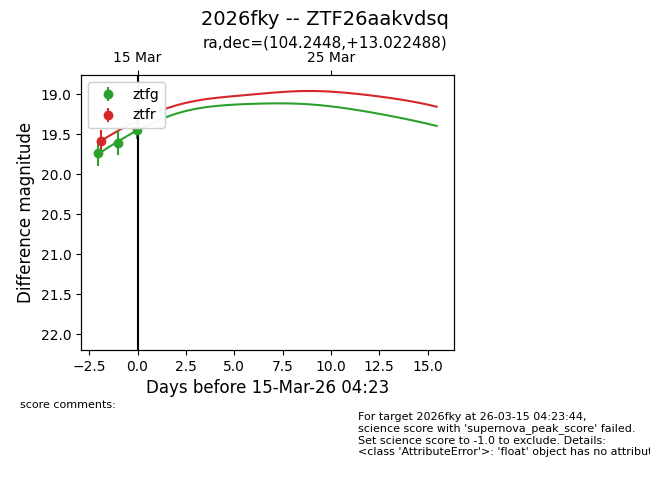
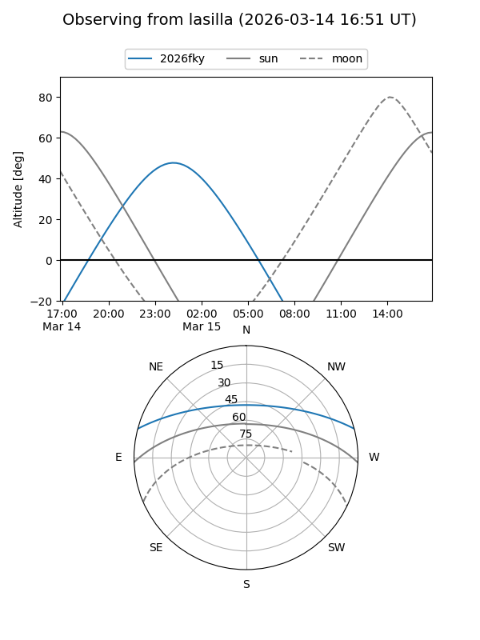
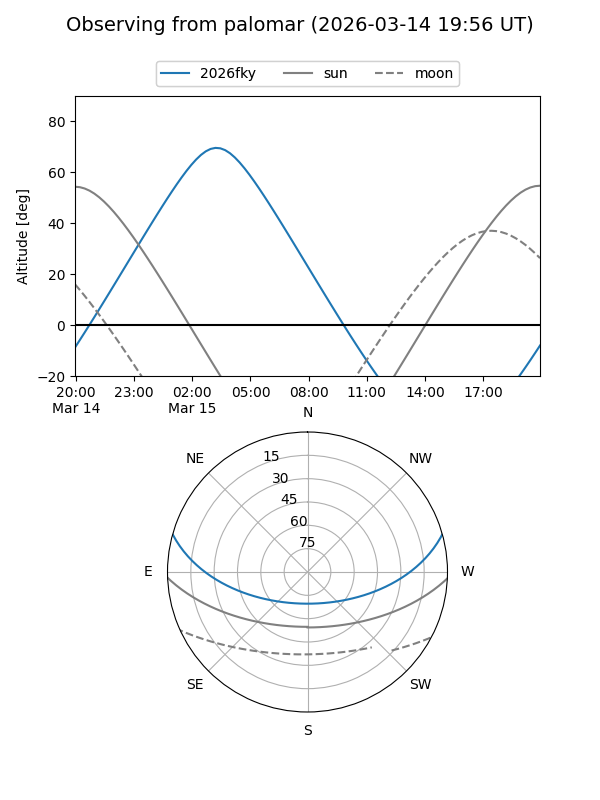
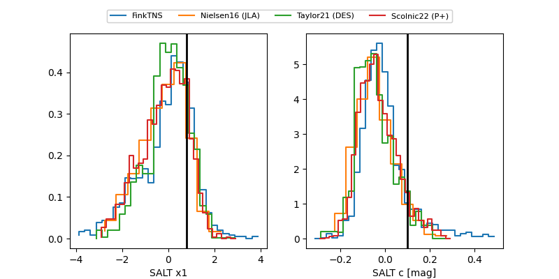

2026fky
Target 2026fky at 2026-03-15 04:25
Aliases and brokers:
FINK: link
Lasair: link
ALeRCE: link
TNS: link
YSE: link
alt names
ZTF26aakvdsq (ztf,fink_ztf)
2026fky (tns,yse)
Coordinates:
equatorial (ra, dec) = 104.2448,+13.02249
equatorial (HMS+DMS) = 06:56:58.75,+13:01:20.96
galactic (l, b) = (201.9048,+7.10634)
Flags:
Photometry:
last ztfg=19.45, ztfr=19.59
3 ztfg, 1 ztfr detections
Lightcurve

Visibility


Additional plots
